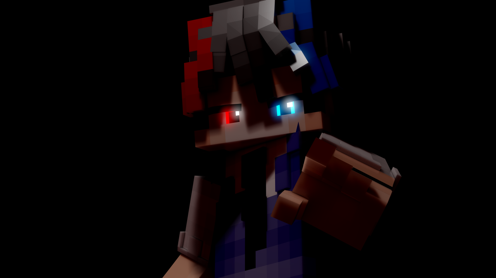
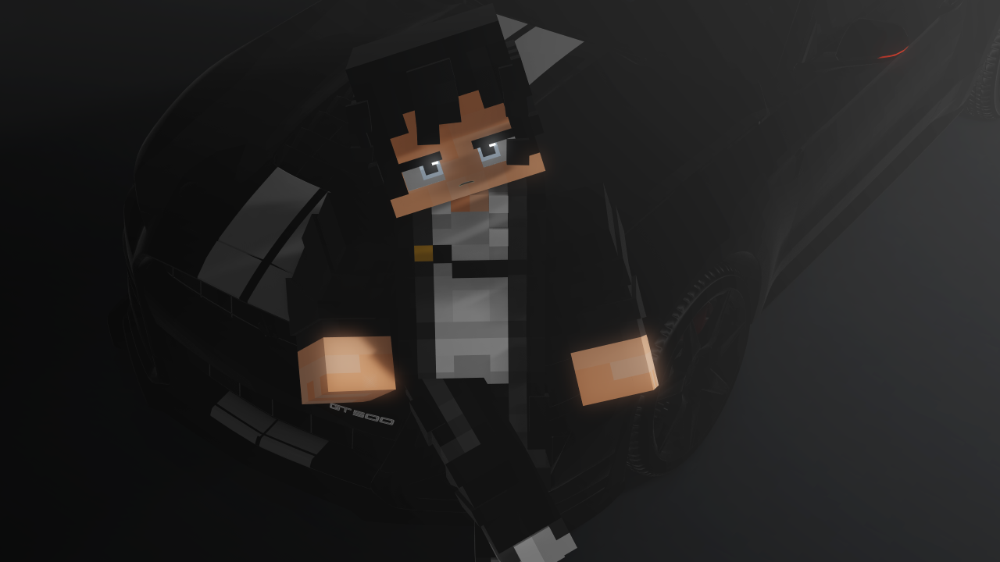
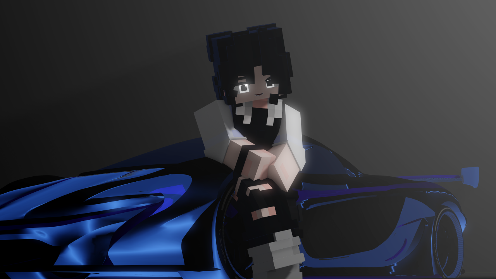

♫ ON REPEAT01 / MUSIC

LAGU FAVORIT
Sisah Cahaya
Nagatsu Akiza
AVAILABLE FOR NEW EXPERIENCES
HELLO, I'M
PERSONAL PROFILE & CREATIVE MIND
Selamat datang di ruang saya. Kenali cerita, minat, musik, dan video yang menemani perjalanan saya.
↘ KENALI SAYA LEBIH DEKAT✳ Ku tak mengira
akan sejauh selat,
untuk kita yang pernah dekat tanpa sekat.
02 / PROJECTS
Beberapa karya yang saya buat untuk mengeksplorasi ide, desain, dan pengalaman pengguna dalam bentuk yang sederhana namun bermakna.

Karakter dengan vibe futur, minimalis, dan pose dramatis yang cocok untuk visual portofolio maupun fan art.

Konsep karakter dengan ekspresi dingin, potongan rambut tajam, dan pencahayaan yang memberi kesan misterius.

Scene berani dengan mobil sport, pose tenang, dan nuansa neon biru yang memberi kesan modern serta elegan.
Potret karakter dengan pencahayaan hangat, lanskap lokal, dan ekspresi tenang yang sangat cocok untuk cover visual.
03 / ABOUT ME
Saya suka mengeksplorasi hal baru dan terus mengembangkan diri. Di sini saya berbagi cerita, hal yang saya sukai, serta inspirasi yang membentuk perjalanan saya.
PERSONALITY
04 / MY APPROACH
Mencari inspirasi dari hal-hal di sekitar.
Mengambil pelajaran dari setiap pengalaman.
Mengubah ide menjadi sesuatu yang bermakna.
Terus mencoba, berkembang, dan melangkah.
04 / GET IN TOUCH
Temukan saya di media sosial. Senang bisa saling menyapa dan berbagi cerita.
↗ SAY HELLO